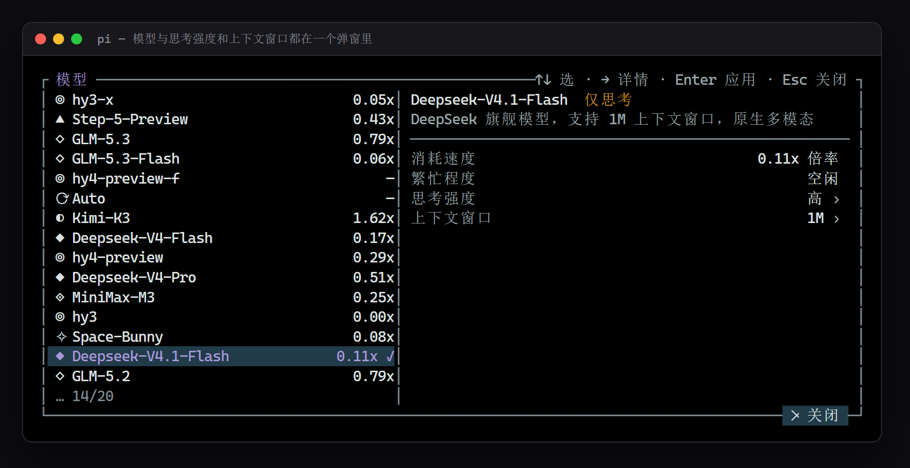
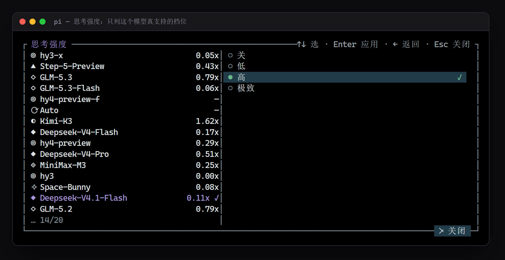
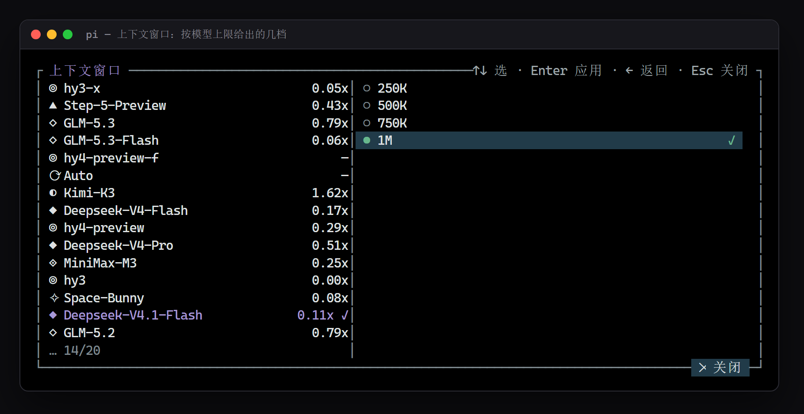

给 pi 命令行加三样东西：一个说清状态的 footer、一个能直接用鼠标点的模型选择器、一行不占版的网关状态。整套东西是 pi-open-tui 的自有分支，改坏了改回来就在这个包里，不会随上游升级被覆盖。
三个扩展，一个包：
| 扩展 | 它做什么 |
|---|---|
open-tui |
Starship 风格的底部信息：目录、分支、模型、思考档位、上下文占用。本分支在模型名后面加了 alt+m 模型 的提示，这是与上游唯一的差别。模型名后面那个窗口数字显示的是实际生效值：用选择器把窗口改成 500K，这里就写 500k，不再是 models.json 名字里写死的 1M。 |
wb-model-picker |
按 alt+m（或输入 /pick）弹出选择器：左边模型列表（倍率、标签、当前项打勾），右边详情（说明、消耗速度、繁忙程度、思考强度、上下文窗口）。三项都能改，键盘和鼠标都能用。 |
wb-stats |
一行状态：本轮 token（↑入 ↓出）、积分（本轮 / 会话）、tok/s、缓存读写量与命中率。发布方式是可叠加的扩展状态行，不跟 footer 抢位置。0.4.1 起移除了上游账号与繁忙度那一段（网关内的实时负载在选择器里已经能看到，状态行不必重复占宽）；「本轮积分」按会话累计的增量累加，一次用户请求里的工具循环不会被反复归零，晚到的网关日志也会补进当轮。 |
后两个只在你用「OpenAI 兼容网关」时才多出额外信息（倍率、积分、上游账号）。其他 provider 自动降级：选择器照常换模型与思考强度，网关相关的列显示为空，不会报错。
下面三张不是画的示意图，是把包里这三个扩展真跑起来截的：模型表读你自己的 models.json，倍率与说明来自网关 /v1/models、繁忙程度来自 /status，配色用的就是 pi 的 dark 主题。终端宽度 100 列。



这三张只拍了选择器。footer 与状态行没拍 —— 它们的内容随会话实时变（目录、分支、token、积分、上游账号数），截一张固定的图反而容易误导，装了看真的一眼就明白。
pi 支持把目录直接当包加载。两条路，选一条。
# 把包放进任意位置，然后把它的绝对路径加到 packages 里
pi install C:\path\to\pi-tui
# 检查是不是加载了（应当看到 open-tui / wb-model-picker / wb-stats 三个扩展）
pi -p "只回复两个字：成功"也可以不改全局配置，临时挂一次：
pi -e C:\path\to\pi-tui -p "只回复两个字：成功"删 package.json 里 pi.extensions 数组的对应项即可，三行互相独立。wb-model-picker 与 wb-stats 都依赖同目录的 extensions/wb-gateway.ts，别单独拷走其中一个文件。
npm install）tuiMode: "fullscreen"；若你改成了 regular，键盘仍然可用本包 fork 了上游全部源码，其中 open-tui 那一份是同一个扩展。两个都装 = 同一份东西装两遍，而 pi 既不去重也不同名检查，一条警告都不会报，只会静默错位：
| 哪里撞 | 同时装会发生什么 |
|---|---|
| footer | footer 全局只能有一个：ctx.ui.setFooter() 后调用的会接管前一个并 dispose 掉它（extensions/open-tui/footer.ts:418）。于是界面显示后加载那一版，先加载那版的定时器还在跑却渲染不出来 —— 白耗。两版代码不同时（本分支多一行 alt+m 模型 提示），你会看到提示时有时无。 |
命令 /open-tui |
解析是 resolveRegisteredCommands().find(...)，先加载的先得到（pi 的 runner.js:595）。设置面板可能来自另一个版本，无提示。两版都读同一份 ~/.pi/agent/open-tui.json，字段还可能对不上。 |
| 快捷键 | 这是 pi 唯一会打诊断的地方（Extension shortcut conflict: … Using …）。但上游一个快捷键都不注册，本包只新增 alt+m，没有重名键 → 连这条警告也不会有。 |
去重也帮不上忙：pi 只按「同一身份」去重（同名 npm 或同一路径算同一身份），npm:pi-open-tui 与本地路径是两个身份，会各装一份。
pi remove npm:pi-open-tui
pi install C:\path\to\pi-tui删掉 package.json 里 pi.extensions 的第一项，只留后两个 —— 这样上游 open-tui 继续出 footer，本包只提供选择器与状态行，两边不重：
"pi": {
"extensions": [
"./extensions/wb-model-picker.ts",
"./extensions/wb-stats.ts"
]
}这个组合下 footer 里不会有 alt+m 模型 提示（那行在本分支的 open-tui 里）；alt+m 快捷键仍然可用。
看 ~/.pi/agent/settings.json 的 packages 数组：出现 npm:pi-open-tui 就说明上游也在。只应该有一条指向 pi-tui（npm:pi-open-tui 或 本地目录，不能两个都有）。
| 操作 | 效果 |
|---|---|
alt+m / /pick | 打开选择器 |
↑ ↓ / j k | 在列表或子菜单里移动 |
→ / Tab / l | 进右栏详情 |
← / h | 退回左栏；在子菜单里退回详情 |
Enter | 应用选中项，或展开子菜单 |
空格 | 展开思考强度 / 上下文窗口子菜单 |
Esc | 关掉选择器（任何层级） |
| 鼠标 | 滚轮翻列表；单击选中、再点应用；点 ✕ 关闭 退出 |
/wb2stats | 开关那行状态 |
/open-tui | 上游自带的设置面板（主题、图标、布局等） |
为什么不用 ctrl+shift+m：不少终端会把它退化成 Enter，等于替你按了回车。为什么不能接管 /model：那是 pi 内置命令，扩展覆盖不了。
窗口大小的真源是模型元数据里的 contextWindow。选择器给出 25% / 50% / 75% / 100% 四档（1M 的模型按 50K 量化），选中后用一份改了 contextWindow 的模型副本喂 pi.setModel()，选择记在 ~/.pi/agent/pi-tui-plus-state.json，下次开会话自动贴回。这是改动本会话的视图，不动你的 models.json。
全部可选。没有配置文件也能跑：网关地址从 ~/.pi/agent/models.json 里第一个带 baseUrl 的 provider 推出来。
// ~/.pi/agent/pi-tui-plus.json
{
"gateway": {
"provider": "wb2api", // 也可用环境变量 WB2API_PROVIDER
"baseUrl": "http://127.0.0.1:7863/v1", // 覆盖推导出来的地址
"logDir": "F:\\docker\\workbuddy2api\\data\\request-logs" // 可选，0.3 时代的日志口径
}
}| 环境变量 | 作用 |
|---|---|
WB2API_PROVIDER | 以哪个 provider 为准（默认：当前模型所在 provider） |
WB2API_BASE_URL | 覆盖网关地址 |
WB2API_LOG_DIR | 0.3 时代的本地请求日志目录。0.4 起积分改读网关自己的控制台接口，这个变量一般不用设了 |
积分不靠端口日志、也不抓面板网页：直接打控制台页里那层 JSON API —— /panel/api/overview 取余额（健康且未禁用账号求和），/panel/api/request_logs 取逐条消耗，只算 user_agent 以 pi 开头的行 —— 同一个人同一台网关下还跑着别的客户端时，不会把它们算进来。探测那一下只看接口能不能答出 accounts[]：404/401/403 就是别人的网关，自动回落到 pi 自己算的 $ 费用，不报错。
| 想改什么 | 动手的位置 |
|---|---|
| footer 的排列、颜色、图标 | extensions/open-tui/footer.ts（上游代码，本分支只加了一行提示） |
| 选择器的版式、图标、标签 | extensions/wb-model-picker.ts：iconFor() / tagsFor() / render() |
| 状态行显示哪些段 | extensions/wb-stats.ts 的 compose() |
| 网关探测、积分、路径缩写 | extensions/wb-gateway.ts（两个扩展共用这一层） |
改完不用构建，重启 pi 即生效（pi 直接执行 .ts）。它跑在 Bun 上，所以能用 TS 语法，但别写 ?? 与 ||/&& 混在一行的表达式 —— 会撞解析错误。
/v1/models 与 /status，积分与余额来自 /panel/api，都是自定义字段。换别的网关时这些列会空着，不报错。/compact。